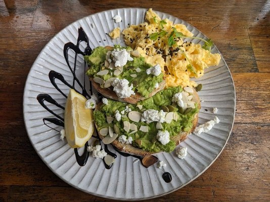
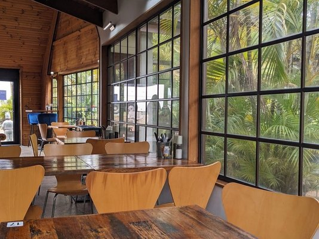
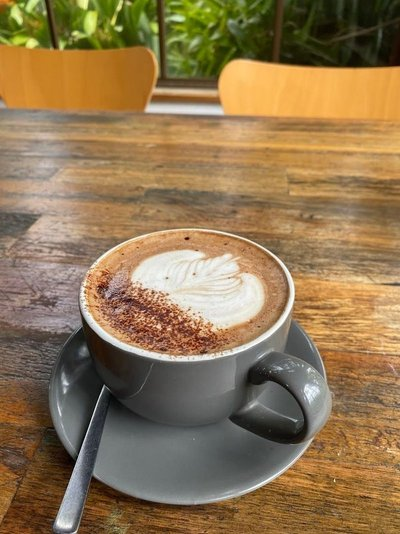
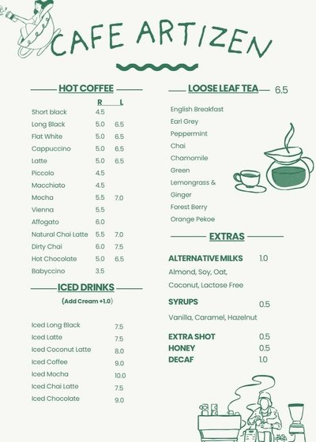

Curtis Falls Track
A short rainforest walk for visitors wanting waterfalls without a big hike.

Tamborine Mountain, Gallery Walk
Garden brunches, Korean-Australian comfort dishes, Kuhl-Cher coffee, and a peaceful rainforest pause in the heart of the mountain.
Our Story
Artizen feels less like a stop-in cafe and more like a gentle retreat. Set in one of Gallery Walk's distinctive timber buildings, the space pairs lush gardens, a relaxed mountain pace, and a menu that moves between classic brunch comfort and Korean-inspired flavour.
The result is a place for long breakfasts, quiet coffee breaks, and visitors who want Tamborine Mountain to feel a little slower, softer, and more memorable.
Garden & Vibe
Outdoor seating, mountain light, relaxed garden details, and the kind of atmosphere that turns a coffee stop into a long pause.



Social Proof
“Super friendly staff and such a chill vibe. The coffee is seriously amazing.”
“Unique timber building in a garden setting, very relaxed.”
“I tried the Korean Bulgogi Rice and absolutely loved it.”
Local Guide
A short rainforest walk for visitors wanting waterfalls without a big hike.
Move from coffee to boutiques, galleries, antiques, and small mountain finds.
Turn brunch into a scenic drive with one or two hinterland viewpoints nearby.
Visit
Artizen Cafe sits right on Gallery Walk, making it an ideal breakfast or lunch stop before shopping, forest walks, or a slow scenic drive around Tamborine Mountain.